I.demonstráció
KÉPLETEK ➜ nukleinsavak + aminosavak (bk. copy!)
#1 A pro- és eukarióta sejtek összehasonlítása: a kompartmentáció jelentősége és a legfontosabb sejtorganellumok .szerepe
A pro- és eukarióta sejtek összehasonlítása: a kompartmentáció jelentősége és a legfontosabb sejtorganellumok szerepe
- prokariótákból evolúció során úgy lett eukarióta, hogy membránnal körülhatárolt kompartimentumok jöttek bennük létre
- ezért az eukarióta eggyel magasabb szerveződési szintű
- ugyanis a membránok biztosítanak térben és időben differenciált működést
- céhek esetében egy ember() végezte az egész feladatot (kivágja a fát, kifaragja, lefesti és árusítja a széket)
- manufaktúra esetében csak egy szakaszát végzi egy ember(organellum) (van aki csak a fát vágja ki, van aki csak kifaragja stb.)
- a többi organellumra veszélyes anyagok,reakciók elkülönítése ➜ pl. peroxiszóma: H2O2-termelés és –lebontás
- magas lokális szubsztrátkoncentrációk, hatékony enzimreakciók (sorozatreakciók: pl. mitokondriális légzési lánc)
- plazmamembrán
- intracelluláris membránok
- mitokondrium
- endomembránrendszer
- magmembrán és ER egymás folytatása
- vezikuláris transzport ER és Golgi között
- anterográd(ER➜G)
- retrográd(G➜ER)
- peroxiszóma és lizoszóma membránja az ER-ből származik !!
szerveződési szint
kompartimentáció "funkcionális" szemléltetése?
"céhek(prokarióta) vs. manufaktúra(eukarióta)" példáján jól bemutatható
kompartimentáció előnyei?
membránok csoportosítása

A pro- és eukarióta sejtek összehasonlítása: a kompartmentáció jelentősége és a legfontosabb sejtorganellumok szerepe
- sejtmag
- mitokondrium
- ER
- Golgi
- lizoszóma
- peroxiszóma
- replikáció ➜ DNS megkettőzés
- transzkripció ➜ RNS-szintézis
- mitokondriális DNS/RNS/fehérje-szintézis
- ATP-termelés
- ER-ből érkező fehérjéket és lipideket átalakítja és válogatja ➜ továbbküldi (ER/plazmamembrán/késői_endoszóma)
- átalakítás során szénhidrátot adhat az anyaghoz ➜ pl. glikolipidet készít lipidből, glikoproteint fehérjéből
- savi hidrolázok, endogén és exogén anyagok lebontása ✽
- oxidációval lebontása az alábbiaknak ➜ zsírsavak, purin bázisok, aminosavak
- egyes toxikus anyagokat pl. etanolt,formaldehidet eloxidálva eliminálja
- alábbiak szintézise
- koleszterinéhez hozzájárul
- epesavakéhoz hozzájárul
- éter-lipidek szintézise csak itt van
- plazmalogén-szintézis első lépése
- transzláció
sejtorganellumok felsorolása?(6)
sejtmag fő funkciói?(2)
mitokondrium fő funkciói?(2)
Golgi fő funkciója?
lizoszóma fő funkciója?
peroxiszóma fő funkciói?(1+2)
sER funkciói?(6)
| általános | speciális |
|---|---|
|
# foszfolipid-szintézis
# lipid-szintézis ➜ pl. koleszterin (májban különösen intenzív)
# Ca2+ tárolás ➜ harántcsíkolt izomban különösen intenzív!!!!
|
# szteroid-szintézis (mellékvesében,herékben,petefészekben)
# "méregtelenítés" (májban)
# glükóz-6-foszfát "lebontása" glükózzá + foszfátionná (májban)
|
rER funkciója?
#2 A nukleotidok felépítése. A nukleinsavak primer és szekunder szerkezete (DNS, különböző RNS-ek).
A nukleotidok felépítése. A nukleinsavak primer és szekunder szerkezete (DNS, különböző RNS-ek)
- bázis ➜ purin / pirimidin
- szénhidrát ➜ ribóz / dezoxiribóz
- legalább 1 foszfát ➜ HPO4- / H2PO4- (hisz pH!)
- nukleozid ➜ nukleobázis + pentóz
- nukleotid ➜ nukleozid + foszfát
- -ozin vs -idin ///// -ilát vs -idilát
- (AMP-t enzimek nevében adenilsavként nevezik, és így tovább)
- β-N-glikozidos kötés ➜ pentóz és nukleobázis között
- foszforsavészter-kötés ➜ pentóz és foszfát között
- foszfodiészter-kötés ➜ nukleotidokat kapcsolja össze
- foszforsav-anhidrid kötés ➜ foszfátok között, makroerg!! 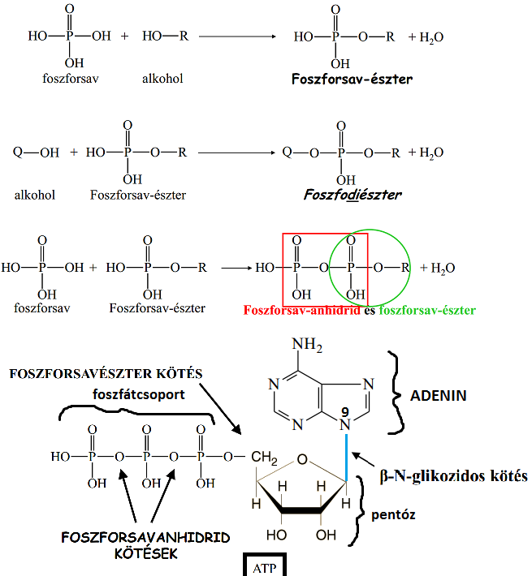
- félacetál/félketál + alkohol/szerves amino származék ➜ acetál/ketál + H2O
- jelen esetben tehát ami létrejön az acetál, ezenkívül glikozid is, és nukleozid is
- purinnál 9 és 1' között van a β-N-glikozidos kötés!!!
- pirimidinnél 1 és 1' között van a β-N-glikozidos kötés!!!
- mivel csak 1 sigma-kötés a β-N-glikozidos kötés, ezért szabad rotáció van körülötte
- purinnál így sokkal gyakoribb az anti KONFORMÁCIÓ (pirimidinnél nincs lényeges különbség a kettő között)
- glikozid ➜ szénhidrát mely valamilyen másik molekulához kapcsolódik (lehet szénhidrát, de lehet más is)
- kovalens kötés, mellyel a szénhidrát valamilyen másik molekulához kapcsolódik (lehet szénhidrát, de lehet más is)
- mert a ribóz β-anomer (lásd 134-es kérdésnél kifejtve)
- a kötés lehet C,S,O,N (t nincs :))
- O esetében ez lenne 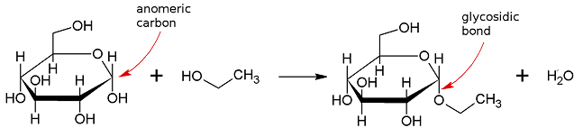
- itt azonban O helyén N van
- két kötés van
- foszforsavészter-kötés ➜ pentóz és foszfát között
- foszforsav-anhidrid kötés ➜ foszfátok között
- foszforsav-anhidrid kötés makroerg!!! ➜ ugyanis nem képes delokalizációra, így instabil ➜ hidrolízissel így felszakad a kötés és nagy energia szabadul fel (30kJ/mol)
- 1db ATP így kb 60kJ/mol energiát tárol (tehát ha az Adenozin-TriPhosphat ha Adenozin-MonoPhosphattá alakul, akkor ennyi energia szabadul fel!!!)
nukleotidot felépítő molekulák?
TAB elnevezésük (nukleobázis,nukleozid,nukleotid)?

kötések ➜ felsorolás előfordulással?
R ribonukleozid szerkezete az adenozin és uridin példáján?
reakció felírása? milyen molekulát kapunk
kötés neve? hányas számú atomok között van?
kötés jellemzője és következménye?
glikozid és glikozidos kötés mi?
miért β a kötés?
miért N a kötés?

nukleotid "energiatárolásának" lényege?
A nukleotidok felépítése. A nukleinsavak primer és szekunder szerkezete (DNS, különböző RNS-ek)
- nukleinsavak polimerek (fehérjék is) ➜ monomerjei a nukleotidok
- 3' vég ➜ 3' C atomon szabad -OH csoport van, mert már nem kötődik hozzá foszfát
- 5' végnél ugyanez, bár az gyakran foszforilált marad
- töltése negatív, lásd foszfátion bekarikázva a képen!!!

- bázispárok merőlegesek a cukor-foszfát-gerincre
- átmérője 2nm
- bázispárok síkjába képzeljem el!! (képen direkt van torzítva, hisz az merőleges a monitor síkjára)
- átmérője állandó, mert komplementer
- tulajdonságai
- komplementer ➜ purinhez mindig pirimidin kapcsolódik
- antiparallel, mert a két szál lefutása ellentétes ➜ fenntről-lefele a bal oldali 5'-3' míg a jobb oldali 3'-5'
- 5' bal felső & jobb alsó
- jobbmenetes kettős hélix
- a szomszédos bázispárok egymáshoz képest 36°-os szögben fordulnak el (10db képez egy fordulatot)
- jobbmenetes? ► felülről(vagy alulról) nézve az óramutató járásával egyező irányba forogva távolodik
- menetmagasság? ► 3,4nm (tehát 10bázispár = 1fordulat hossza ennyi)
- (menetmagasságból mi következik?) ► 0,34nm van két szomszédos bázispár között, ami igen kicsi távolság (pl. C-C kovalens kötésnél a távolság ~0,15nm)
- A & B jobbmenetes
- Z balmenetes
- egyedül Z eseténél van szin, mégpedig a purinbázisok minden más anti
- BAZ irányban növekszik a bp/fordulat || átmérő pedig logikus
- fenolok között kialakuló kölcsönhatás ("aromás tapadás")
- akkor a legerősebb, ha 36° szögben fordul el a két szomszédos bp
- !génekben! az arányuk 1:1
- amely szakasz G≡C-ben gazdag, az kisebb valószínűséggel fog transzkripcióra kerülni ➜ugyanis 1,5x erősebb a kölcsönhatás G≡C között, mint A=T között (hisz 3kötés van köztük, nemcsak 2)
- nagy barázda mentén történik a transzkripció
- RNS-ek többségének csak primer szerkezete van
- egyes RNS-eknek azonban van szekunder szerkezete is ➜ komplementer bázispárok egymással hurkot alkotnak
- pl. tRNS-nek van szekunder (és tertier) szerkezete is
- nem egyszálú (mint az RNS-ek többsége) ➜ van másodlagos, sőt harmadlagos szerkezete is
- 3' végén van a mindig CCA-ra végződő aminósav-kötőhely
- másodlagos-szerkezetének alakját jegyezzem meg
- amelyik oldalon fentebb van a hurok(+van egy "minihurok" alatta), az a riboszóma-kötőhely, másik oldalon pedig az enzim-kötőhely
- alsó hurok az antikodon rész ➜ azzal kapcsolódik mRNS
- 10%át ritka bázisok teszik ki
- hurok területén vannak, mert bázispárosodásra nem képesek
- pl. metil-guanin, metil-adenin, metil-citozin, Timin(hisz RNS ugye Uracil)
- harmadlagos-szerkezete L-alakú ➜ felül aminósav-kötőhelyre végződik, alul antikodonra
R primer szerkezetük
§ így poláros olyan értelemben, hogy a két végük megkülönböztethető (3' vs 5')
DNS primer szerkezet ➜ síkok & átmérő? tulajdonságai?
-
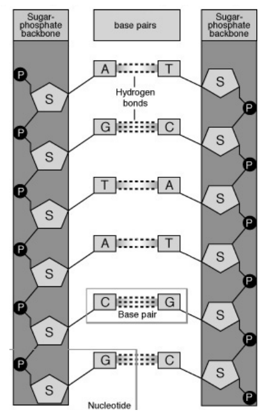
képen melyik vég 5' és melyik 3'?
DNS szekunder szerkezete?

DNS konformációi?
felsorolásuk & menet?

nukleozid konformációk?
előfordulásuk?
B leggyakoribb
A dehidratáció esetében (vízelvonás / só hozzáadás) ➜ kondenzált forma, így nem lesz transzkripció
Z promoter régió területén fordul elő, hogy sok TF odaférjen
átmérőjük & bp/fordulat?
B 2nm & 10bp/fordulat
A 2,6nm & 11bp/fordulat
Z 1,8nm & 12bp/fordulat
DNS ➜ π-stacking forces?
-
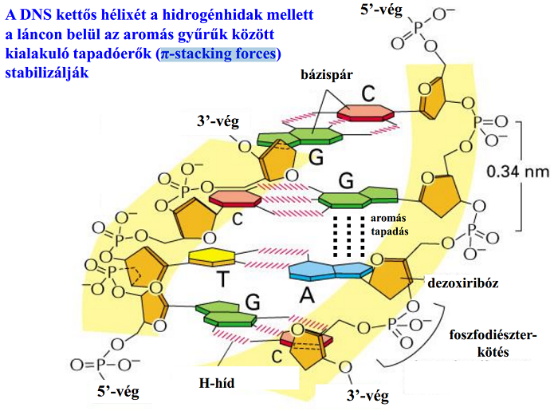
DNS ➜ G≡C & A=T aránya milyen? attól való eltérés?
képről mit kell tudni?

megoldás

RNS-ek szekunder szerkezete?

tRNS szerkezete

nukleotidok funkcióinak felsorolása?(6)
- nukleinsavak monomerjei
- kémiai energia közvetítés és közben csoportátvitel ➜ pl. ATP-ből mikor ADP lesz, foszfátcsoportot és kémiai energiát ad át
- sejten belüli jelátvitel ➜ pl. cAMP, cGMP szekunder_messengerek (lásd "GPCR receptoros jelátvitel" OrvosiBiológia.html)
- koenzimek alkotói (pl. CoA)
- metabolitok aktiválása ➜ az alapvetően endergónikus folyamatban résztvevő metabolitokat magasabb energiaszintre véve (aktiválva) biztosítják a folyamat végbemenetelét (azáltal, hogy így már nettó exergónikus lett) ➜ pl. ATP aktivál aminósavat
- szabályozás (folyamatok gyorsítása/lassítása)
- olyan nem peptid-szakasz,(nem fehérje) mely az enzimhez kapcsolódva azt aktiválja (szükséges a katalízishez)
koenzimek?
§ úgy érdemes felfogni, mint eszköz ➜ pl. kéz az enzim, koenzim pedig a szike, ami nélkül "nehezen" lehetne boncolni
számozás ➜ nukleobázisok & szénhidrátok?
- nukleobázisok ➜ kép
- szénhidrátok
- aldehidcsoporttól kezdődően
- ' ot teszünk mögé, pl. 5' ➜ bázisok C-atom számozásától így különböztethetők meg, mert ott nincs '
bázisok tautomériája? ➜ milyen? melyik fordul elő gyakrabban? milyen izomériába tartozik?
- konstitúciós ➜ laktám-laktim ➜ =O & -NH- vs -OH & =N-
- oxo = laktám van gyakrabban (oka?) képletek 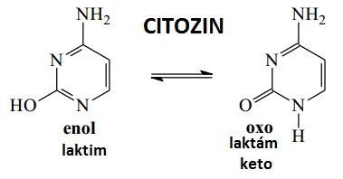

 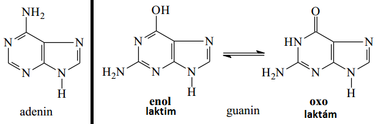
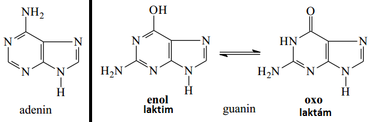
R hibás bázispárosodás ➜ lényege? neve?
- neve ➜ miss-match ?következménye?
- adenin citozinnal kapcsolódik hasonlóképpen ➜ forrás

- "megjegyzési szabályok" ✽
- pirimidint tükrözzem függőlegesen
- mindig azonos szinten lévők között vannak a H-kötések
- -OH alapvetően mindig =O formában, mutációnál egyet kell megváltoztatni -OH-ra
- -NH2 mindig NH2

szénhidrátok sztereoizomériája?
- Fischer-szabály alapján D/L-nomenklatúrát alkalmazzuk
- lényege:
- emberi szervezetben csak D monoszacharidok fordulnak elő 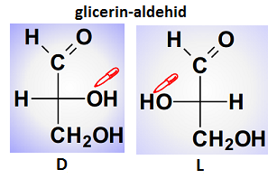
1 legoxidáltabb C felül kell legyen ➜ aldehid ezért felül van!
2 leghosszabb ligandum legyen alul ✽
3 legalsó királis C atomon, ha jobbra áll az -OH, akkor D ➜ ha balra akkor L
§ tehát ha visszavezetem (először oxidáció +O, utána oxidatív_dekarboxiláció –CO2 és ezt repeat) glicerin-aldehidig, akkor megnézem az D-e vagy L-e
dezoxiribóz hogy jön létre?
- 2'C-nél redukcióval ➜ ribonukleotid-reduktáz enzim csinálja (dezoxiribonukleotid képződik ribonukleotidból)
ribóz ➜ hogy jön létre? milyen molekula?
-
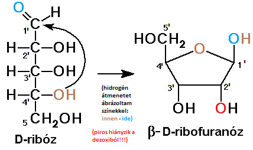
- nukleofil addícióval jön létre ➜ ciklusos félacetál
- így kialakul az ún. furanóz gyűrű (glükóznál piranóz gyűrű lesz)
- Haworth projection? ► D helyzetű –OH kerül alulra, L helyzetű felülre (lásd képek) ✽
- az 1' lévőt az ún. glikozidos –OH csoportnak hívjuk
- ez, ha a konfigurációt meghatározó C-atomon !? levő OH-csoporttal azonos térállású akkor α-anomer, ha ellentétes akkor β-anomer 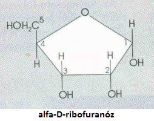
hidroxilcsoportról egyéb tudnivaló?
(dezoxi)ribóz konformációi?
- boríték konformáció
- C-2'-endo vagy C-3'-endo (kettő közül emelkedik ki vmelyik a gyűrű síkjából) 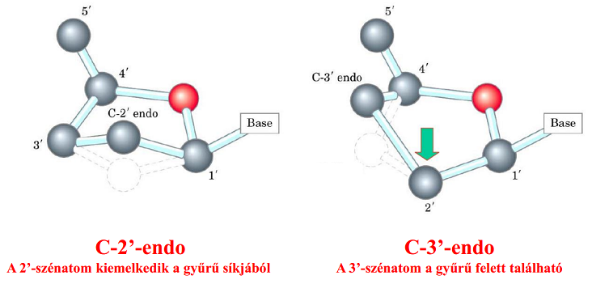
RNS és DNS alkotói közti különbségek?(2)
- RNS ➜ ribóz & uracil
- DNS ➜ dezoxiribóz & timin
- DNS jóval stabilabb (akár évezredekig megmaradhat, míg RNS max pár hónap)
- ugyanis az RNS-ben lévő –OH csoport igen reaktáns, aminek következtében magát lebontja (foszfodiésztert támadja, és 3' 2' foszfodiészter kötés lesz ➜ kettészakad az RNS)
("következményük aka mi szükség van rá?")
dezoxiribóz vs ribóz ✽
RNS és DNS mit rövidít?
- (Dezoxi)RibonukleinSav
bázis-szekvenciát(pl.AUG) "milyen irányba" olvassuk?
- 5' ➜ 3'
- (képen pl. ATG & UGC lenne, ha leírnánk!!)
bázispárok & kötések száma?
- A=T/U
- G≡C
DNS denaturáció ➜ hogy váltható ki? lényege?
- kiváltható pl. lúgosítással, hevítéssel
- lényege ➜ H-kötések felszakadnak így letekeredik a két szál
- lúgos közegben miért megy végbe?► mert a H-kötést alkotó protonokat leadják a bázisok
- renaturáció kiváltása?► lehűtéssel/visszasemlegítéssel van esély rá, hogy visszaálljon
- in vivo letekeredés szükséges?► igen, helikázok(enzimek) végzi

R Hiperkróm-effektus lényege?
- ~260nm(UV!) hullámhosszú fény az abszorpciós maximuma
- kétszálú DNS fényelnyelése lényegesen kisebb, mint egyszálúé () ➜ ezért ha hőmérséklet fv-ében ábrázolom a fényabszorpciót, akkor látható, mikor indul meg a denaturáció
- kb. 80-90°C között megy végbe
- olvadási hőmérséklet ➜ bp-k 50% már felszakadt
- G≡C 1,5x olyan erős mint A=T ➜ jobban ellenáll a denaturációnak ➜ grafikonon is látható, hogy később kezdi meg ➜ kikövetkeztethető a G≡C tartalom

§ denaturácio gondolom egyenesen arányos abszorpcióval (y tengely)
#3 A génállomány kondenzációja pro- és eukarióta sejtekben. A topoizomerázok és a kromatinfehérjék szerepe.
prokarióták
- génállomány kondenzációjának oka ► alapvetően nem férne bele a sejtbe ("kör" jóval nagyobb mint a sejt)
- #1 DNS-kötő fehérjék "összegyűrik" ➜ hurokszerkezet
- #2 szuperspiralizációval létrejön a szuperhélix-szerkezet
- topoizomerázok(enzimek) végzik
- pozitív ➜ jobbmenetest jobbra csavarok ➜ nő a linking_number = fordulatszáma a kettős_hélixnek
- negatív ➜ jobbmenetest balra csavarok ➜ csökken a linking_number
- mindkét esetben nő az energiaszintje (ATP igényes a folyamat!)
- pozitív ➜ silencel (heterokromatinizál)
- negatív ➜ "kinyitja", replikáció & transzkripcióhoz előkészíti ➜ (Ez szvsz nem csak akkor, ha alapból pozitívan volt szuperspiralizálva. Ugyanis jobban belegondolva, ha a relaxáltat kezdi el tovább széttekerni, akkor az a terület amit szétteker, kinyílik szépen, és csak arrább keletkeznek szuperhélixek emiatt, az meg kit zavar.)
- 1:55-től kezdődik amit érdemes megnézni (kb.1perc): https://www.youtube.com/watch?v=HyP0cEbqKTc
- itt igen jól le van írva de 30perc mire megértem, és annyira nem kell egyenlőre tudni http://www.tankonyvtar.hu/hu/tartalom/tamop412A/2011-0073_biokemia_molekularis_biologia_alapjai/ch12s03.html
- enzimek
- I funkció ➜ pozitív szuperhélixet visszaállítja relaxált állapotba (ez 1szálat vág el a csavarásnál)
- II funkció ➜ relaxáltból negatív szuperhélixet állapotba állítja (ez 2 szálat vág el a csavarásnál)
- hiszen pozitív szuperhélix állapotban van, tehát energiaszintje magas
- (ezért ha az egyik szál meg van fogva, és a másikat elvágja, akkor az utóbbi "visszapörög normál helyzetbe") ✽
- replikációnál, mikor a helikáz bontja a H-kötéseket a bp-k között, akkor elkezd szétnyílni a lánc
- azonban a még szét nem nyílt kettős hélix ennek következtében pozitív szuperspiralizációt szenved el
- ezt kell kordában tartania
- gyógyszerrel kilőve, gátolható a baktériumok osztódása
- bakteriális giráz
a két szerkezet neve?

szuperspiralizáció ➜ mik végzik? lényege?
mik végzik?
típusai és lényegük?
lehet pozitív vagy negatív
mindkét esetben amennyivel változott az LK, annyiszor(W) fog egymás köré csavarodni utána a DNS kettős-hélix ➜ tehát "annyiszor tekeredő" szuperhélix jön létre, és pont az ellentétes menetirányba (tehát az "összfordulatszám" nem változik)

energetikailag milyen?
pozitív és negatív következménye?

topoizomeráz I & II ➜ mik? funkciója?
miért elég 1szálat elvágni az I-esnek?
topoizomeráz I működésére mikor van szükség?
topoizomeráz I orvosi jelentősége?
topoizomeráz II szinonima baktériumoknál?
eukarióták
- alapvetően nem férne bele a sejtbe ➜ haploid genom(23db DNS) hossza 2m hosszú
- emelett az aktív géneket lefűzött állapotban kell tartani, amely gének "fölösek", azokat heterokromatin formában
- interfázisos (sejciklusban) kromoszóma ➜ DNS + hozzá kapcsolódó fehérjék
- nukleoszóma
- DNS kettős-hélix 2nm
- nukleoszóma 11nm
- szolenoid szál 30nm
- radiális hurok 300nm ➜ ez még lehet eukromatin
- kromatinrost 700nm ➜ ez már heterokromatin
- kromoszóma 1400nm ➜ ezt csak osztódásnál veszi fel
- 2*4db core hiszton alkotja a nukleoszómát ➜ H2A H2B H3 H4
- egy nukleoszómára a DNS 2x feltekeredik ➜ mi tartja ott? ► "core" hisztonok Lys és Arg gazdagok ➜ pozitív töltésűek ➜ DNS negatív töltésű, és így tekeredik rá
- DNS 2 régiója
- linker régió ➜ ~60 bázispár hosszú
- nukleoszómán lévő rész ➜ ~146-147 bázispár hosszú
- H1 és egyéb nem hiszton fehérjék húzzák egymáshoz közel a nukleoszómákat
- így a nukleoszómák spirálisan egymás köré tekerednek (pl. a képen látható jobbmenetes)
- 6 nukleoszóma / 1 teljes fordulat
- átmérője 30nm
- 1.) kettős hélix
- 2.) egy nukleoszómára a DNS 2x feltekeredik
- 3.) szolenoid tekercs ➜ nukleoszómák spiralizációja
- nukleáris laminához kapcsolódnak a szolenoid szál egyes (CCCTC szekvenciás) részei
- a CTCF nevú fehérje kapcsolja hozzá a szekvenciát a lamin-hoz
- MAR = SAR ➜ szolenoid szál azon része ami nukleáris laminához kapcsolódik
- lamina_fibrosa(=) ➜ sejtmag belső membránjához kapcsoltan helyezkedik el, lamin A/B/C fehérjék alkotják

- szolenoid szál...
- laminhoz kapcsolódó része ➜ perinukleáris heterokromatin
- radiális hurok (mag belsejébe nyúló része) ➜ eukromatin ➜ ez ugyanis az RNS-polimeráz és TF-ben gazdag területekbe nyúlik be
- kondenzin nevű fehérjék végzik
- csipesz alakúak ➜ ATP-t felhasználva csökken a "csipesz szöge" ➜ "közelebb húzza a szálakat" (lásd kép)
- leginkább osztódás előtt indul meg nagy intenzitással
- átmérő 700nm
- osztódás során alakul csak ki
- testvérkromatidák összekapcsolása a centromernél történik, és a kohezin nevű fehérjék végzik
- kohezin ezenkívül a kinetochor-komplex belső lemezét is megköti ➜ annak a külső lemeze pedig a mitotikus_orsó mikrotubulusaihoz kapcsolódik
génállomány kondenzációjának oka?
kromatin mi?
kromoszóma alapegységének neve?
§ eukromatin esetében is már nukleoszómára tekeredett a DNS! ➜ tehát kromatin alapegysége is
DNS szerveződési szintjei(6) ➜ átmérővel illetve "eu/heterokromatin besorolással"?

nukleoszóma szerkezete?

szolenoid tekercs lényege?

spiralizációk "száma"?
radiális hurok lényege?

kondenzált heterokromatin =~ kromatinrost ➜ kialakulása?
-
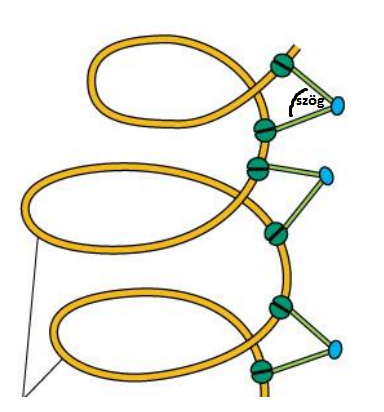
kromoszóma?
testvérkromatidák ➜ 2kromatidás kromoszómában találhatóakat nevezzük így ➜ ezekben a szekvenciák (így allélok) azonosak

#4 A humán kromoszómák szerkezete és sejtciklusfüggő változásai.
#5 A humán genom felépítése; kódoló és génexpressziót szabályzó szekvenciák. A humán genom nem-kódoló szakaszai: intronok, pszeudogének, ismétlődő szekvenciák.
A humán genom felépítése; kódoló és génexpressziót szabályzó szekvenciák. A humán genom nem-kódoló szakaszai: intronok, pszeudogének, ismétlődő szekvenciák.
- 1990-2001-ig tartott a human_genom szekvenálása (DNS 3millilárd bp-jének a meghatározása)
- a jelenlegi feladat, hogy az egyes szekvenciák funkcióját meg kell határozni (tehát pl. van ami fehérjét kódol, stb.)
- két ember genomja kb. 3millió bp-ben tér el egymástól (0,1%)
- egy ember genomja minden sejtben megegyezik
- egy genom kb. 20ezer fehérjét kódol (1-2%át teszi ki ez a genomnak, tehát kb. 30millió bp)
- exom ➜ fehérjét kódoló régió
- a nem kódoló szekvenciák nagyrésze(95%+) is ugyanúgy szintetizálódik RNS-é, csak legtöbb funkciója még nem teljesen tisztázott (illetve nem fog transzlálódni fehérjévé)
- transzkripciót szabályzó szekvenciák
- cisz-elemek ► génhez közel vannak
- transz-elemek ► géntől távolabb vannak (akár más kromoszómában)
- enhancer ► transzkripciót serkenti
- silencer ► transzkripciót gátolja
- insulator ► silencer és enhancer működését gátolja
- CPG-szigetek & SAR=MAR ➜ nem sorolható be fennti kettőből egyikbe se
- CpG-dinukleotidok ► Citozin metiláció
- SAR=MAR ► szolenoid szál azon része ami nukleáris laminához kapcsolódik, és így perinukleáris_heterokromatin lesz, illetve radiális hurok is így képződik (lásd #3 tétel)
- intronok
- pszeudogének
- ismétlődő szekvenciák ➜ genom 50%a
- transzpozonok
- szatellita DNS-ek
- centromere ➜ A és T-ben gazdag
- telomer ➜ G-ben gazdag
- mikroszateliták
- genom ➜➜ transzkriptom ➜ proteom ➜ metabolom ➜ fenom
- centrális_dogma az, hogy a genetikai információ egyirányba áramlik ➜ DNS-ből transzkripcióval RNS ➜ RNS-ből transzlációval fehérje
- mára bebizonyosodott (1970es években), hogy RNS-ből is lehet DNS-t szintetizálni (teáht a centrális dogma, "nem teljesen jó") ➜ ez az ún. reverz_transzkripció és így működnek a retrovírusok, pl. HIV
- genom ➜ egy kromoszómakészlet teljes DNS-szekvenciája (beleértve a nem kódolókat is!)
- transzkriptom ➜ RNS-készlet, tehát összes típusú RNS-ből 1
- proteom ➜ fehérjekészlet, tehát összes típusú fehérjéből 1
- metabolom ➜ kismolekulás metabolitok (anyagcseretermékek) összessége, pl. hormonok, jelzőmolekulák, aminosavak, egyszerű cukrok stb.
- fenomot a proteom és metabolom szabja meg
- környezet ➜ befolyásolja a genom-transzkriptom-proteomot és ezáltal a fenom különbözni fog egypetéjű ikreknél (hiába volt azonos a genom kezdetben)
- Mai ismereteink szerint a humán fehérjekészletet (proteom) mintegy fél millió különböző fehérje alkotja. Könnyen belátható, hogy ennyi fehérje kódolására a kb. 20ezer fehérje-kódoló gént tartalmazó emberi genom nem képes. Olyan, a molekuláris komplexitást fokozó folyamatokra van tehát szükség, amelyek – a genomtól a proteomig – megsokszorozzák (k. 50-szerezik) a különböző molekulaféleségeket ➜ lennti lépések biztosítják ezt
- hiszton módosítások
- CpG-dinukleotidokon Citozin metiláció
- CpG ➜ 2nukleotid egymás mellett (5'➜3' irányba!!)
- ha CpG van, akkor a Citozin 5ös C-atomja metilálódik, illetve az ellentétes szálon lévő is
- csökkenti a génexpressziót azálta, hogy a hiszton-acetilációt fokozza, és így a kromatiná alakulást
- pl. alternatív-splicing
- pl. RNS-editing ➜ Citozin oxidatív(+O) dezaminálásával(-NH) Uracil lesz belőle
nem kódoló szekvenciák 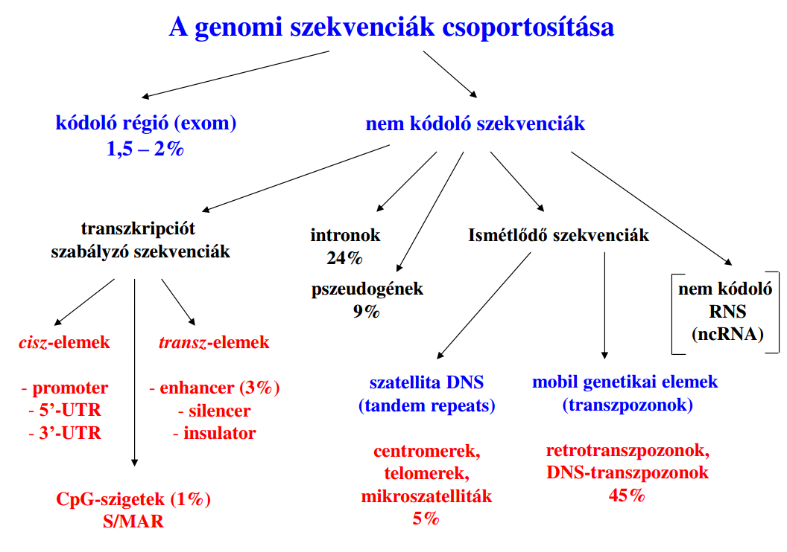
genom & transzkritom & proteom & metabolom & fenom & centrális_dogma & reverz_transzkripció
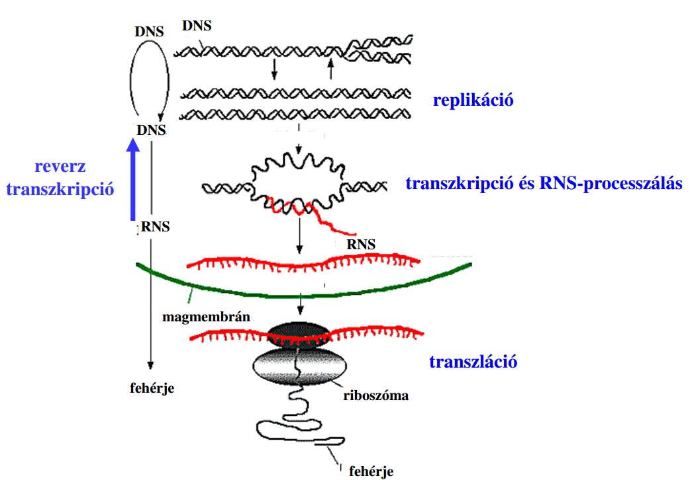
 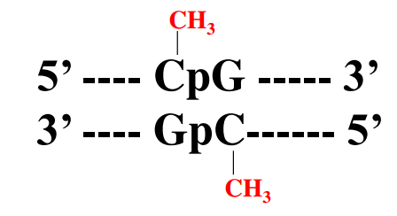
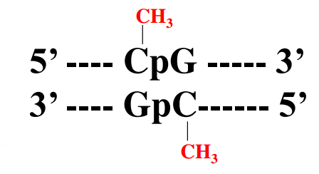
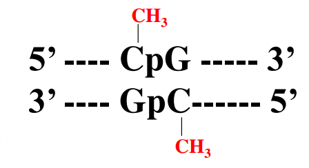
| genetikai | epigenetikai ➜ a genetikai kód megváltozása nélkül szabályozzák | |
|---|---|---|
| transzkripciós | TF-ek általi szabályozás ➜ pl. alternatív promoter ➜ pl. miozin ➜miozin esetében az első exonnak két promotere(E1a/E1b) van, és attól függ milyen szövetben van a sejt, hogy melyik promoterhez fognak TF-ek kapcsolódni és aktiválják azt ➜ a többi exon ezután ugyanúgy hozzáadódik, tehát az első függ attól, hogy melyik promoter volt | kromatin-szerkezetét változtatják |
| poszt-transzkripció |
hnRNS érés során |
RNS-inteferencia ➜ mRNS 3' végéhez hozzákapcsolódik egy mikroRNS és így az a vége kétszálú lesz ➜ ezután RNázok(=ribonukleázok) szétszaggatják az mRNS-t |
| poszt-transzlációs | foszforiláció, metiláció, acetiláció, glikoziláció, ubikvitiniláció, ADP-riboziláció stb. | |
A humán genom felépítése; kódoló és génexpressziót szabályzó szekvenciák. A humán genom nem-kódoló szakaszai: intronok, pszeudogének, ismétlődő szekvenciák.
- funkcióképes fehérje nem termelődik róluk ➜ oka
- az általa expresszálódó fehérje funkcióképtelen (mutáció miatt, anno lehet még jó volt) ➜ pl. STOP-kodon lett a közepén
- és/vagy a promoter régió inaktív, RNS-szekvenciája nincs
- processzált pszeudogének
- reverz transzkripció történik
- lényege ➜ mRNS "visszahajlik" és kettős szálú lesz, majd utána beépül a DNS-be
- így fontos jellemzője, hogy intronja nincs már, a normál génekkel ellentétben (hisz splicing már volt)
- nem processzált pszeudogének pszeudogének
- duplikált ➜ a gén duplikálódik, és utána beépül a DNS-be az eredeti gén közelébe (ennek van exonja) ➜ ez is mutálódik közben
- magányos ➜ mutációval elveszti funkcióképességét (pl. STOP-kodon keletkezik rossz helyen vagy egy fontos aminosav kicserélődik)
- sejtmagi mitokondriális (NUMT) pszeudogének ➜ mitokondriális DNS nagyrésze az evolúció során átmentek a sejtmagba jelentőségük
- tumorsejtek onkogént akarnak expresszálni, azonban a mikroRNS-ek folyton hozzákötődnek az mRNS 3' végéhez és így RNázok lebontják az mRNS-t
- ezért elkezdenek pszeudogén RNS-eket expresszálni, amelyekhez szintén kapcsolódnak a mikroRNS-ek
- így azok lefoglalják a mikroRNS-eket, és az onkogén mRNS-ek nem fognak lebomlani
A humán genom felépítése; kódoló és génexpressziót szabályzó szekvenciák. A humán genom nem-kódoló szakaszai: intronok, pszeudogének, ismétlődő szekvenciák.
- genom ~50%a telomerek
- kromoszóma végén vannak
- TTAGGG szekvencia végén van 1000-2000x ismétlődve
- a kromoszóma végén lévő két DNS-szál közül a 3'-re végződő hosszabb 2 TTAGGG szekvenciával
- hogy ez ne jelentsen gondot, a képen látható ún. telomer-hurok képződik
- ehhez a telomer-hurokhoz egy fehérje-komplex kapcsolódik, mely legfontosabb tagja a telomeráz(enzim) ➜ ez a fehérje-sapka megakadályozza a kromoszómák fúzióját (aneuploidia)
- minden osztódásnál csökken a telomer hossza
- a telomeráz ezt képes pótolni, azonban ez az enzim csak őssejtekben és tumorsejtekben expresszálódik centromer
- 171bp-ól álló T és A-ban gazdag szekvencia ismétlődése
- ehhez kötődik a kohezin, és kapcsolja össze a 2 testvérkromatidákat mikroszateliták
- 2-5 nukleotid ismétlődik
- attól függően, hogy hányszor ismétlődnek, lehet személyazonosságot meghatározni (pl. egyik van akiben 15x ismétlődik, van akiben 17x)
- Huntington-kór oka pl. egy ilyen szekvencia túl sokszor ismétlődik transzpozonok
- fő tulajdonságuk ➜ állandóan változtatják a helyüket a genomban
- csoportosításuk
- retrotranszpozonok ➜ reverz transzkripcióval jutnak át máshova
- DNS-transzpozonok

- szimplán kivágódnak és átmennek máshova ➜ így nem nő a ()számuk (ellentétben a retrotranszpozonokkal)
- transzpozáz(enzim) végzi
- retrotranszpozonok
- retrovírusokból kerültek bele a humán genomba
- pl. következőképp változtatják helyüket (szvsz kb.ugyanaz mint processzált_pszeudogéneknél) ➜ RNS transzkripció ➜ reverz_transzkripció ➜ majd beépül a DNS valamely részébe ➜ ha ez pl. épp egy exonba fog, akkor azt tönkrevágja (képen pl. az exont kettészeli, és közepébe kerül) ➜ okozhat akár daganatot is
- fontos, hogy reverz_transzkripciónál ami elkészül DNS, több dologban is különbözik az eredetitől, mert nincsenek hibajavító enzimek
- retrotranszpozonok
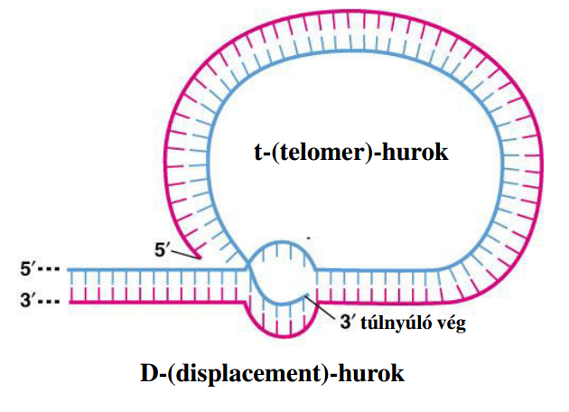

#12 Az E. coli RNS‑polimeráz szerkezete és működése. A transzkripció iniciációja és terminációja prokarióta sejtekben, a prokarióta transzkripciós egység.
Az E. coli RNS‑polimeráz szerkezete és működése. A transzkripció iniciációja és terminációja prokarióta sejtekben, a prokarióta transzkripciós egység
-
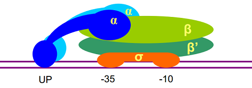
- felépítése ➜ 2α + 1β + 1β' alegységből tevődik ki (a szigmát is hozzászokták venni, de jobb azt faktorként felfogni)
- másképpen fogalmazva az RNS polimeráz apoenzim egészen addig, amíg a σ-alegység hozzá nem kapcsolódik ➜ akkor holoenzim
- apoenzim = 2α + 1β + 1β'
- holoenzim = 2α + 1β + 1β' + 1σ
- apoenzim ➜ képes lánchosszabításra (elongáció)
- holoenzim ➜ képes pontos lánckezdésra (iniciáció)
- α ➜ enzim összetartása
- β & β' ➜ egymással kialakítják a katalitikus centrumot
- σ ➜ felismeri a promotert, azaz megköti a -10 és -35 szekvenciákat ➜ biztosítja a pontoc lánckezdést
- apoenzim nagy affinitással köt bármilyen DNS szakaszt ➜ ha véletlen hozzákötődik, akkor a disszociációs féléletideje kb. 60perc, és utána leválik
- holoenzim
- általános (nem a "Nagy Ő") DNS-szakasz kötő affinitása 1000x kisebb ➜ ha véletlen hozzákötődik, akkor a disszociációs féléletideje kb. 1sec, és utána leválik
- megfelelő DNS-szakaszra az affinitása viszont nagyobb ➜ tehát ha megtalálja a Nagy Ő-t, akkor az ahhoz való kötődés után a leválása lassabb: disszociációs féléletideje kb. néhány óra
- általános σ70 ➜ -10 szekvenciája a TATAAT, -35 szekcenciája a TTGACA
- ezenkívül vannak olyanok, melyek nem nomál körülményekben fognak működni, hanem pl. hőemelkedés, nitroénhiány esetében ➜ más gének expresszálódnak (képen lévők adatait ne tanuljam, max a számukat egy-kettőnek) 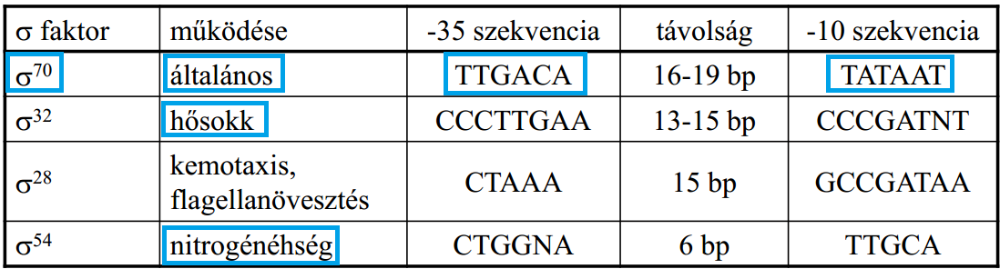
(kép 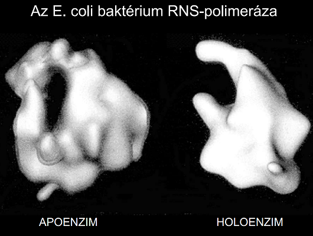)
apoenzim vs holoenzim funkciója?
alegységek funkciója?
σ alegység (faktor!) funkciójának szemléltetése?
σ alegység (faktor!) típusai?
Az E. coli RNS‑polimeráz szerkezete és működése. A transzkripció iniciációja és terminációja prokarióta sejtekben, a prokarióta transzkripciós egység
- transzripciós_egység = egy lépésben részben átírandó rész
- részei? ►
- promoter ➜ -10 & -35
- RNS-re átírt szakasz ➜ +1-től tart a terminációs szignálig

- számok mit jelölnek? ► bázisokat ➜ +1 az első ami átíródik RNS-re, -10 az előbbitől 5' irányba a 10edik stb.
- promoter funkció? ► nem íródik át, csak szabályoz
- bázisok egymásutáni sorrendje, mely nem mindig egyforma ➜ ezért a legnagyobb gyakorisággal elődordulót jelöljük mindig
- pl. -10 & -35 régiók szekvenciája ilyen ➜ annyit jegyezzek meg róluk (kép csak ábrázolja, nem kell tudnom)
- mind2 6bázisból áll
- -10 kb. TATAAT
transzkripciós_egység mi?
konszenzus szekvencia mi?
Az E. coli RNS‑polimeráz szerkezete és működése. A transzkripció iniciációja és terminációja prokarióta sejtekben, a prokarióta transzkripciós egység
- holoenzim addig próbálkozik DNS-kötéssel, amíg meg nem találja a megfelelő promotert (tehát hozzákötődik, ha nem az, akkor elengedi 1secen belül, és repeat)
- ha megtalálta az igazit, akkor a holoenzim a promoterrel ún. zárt_komplexet alkot
- ezután konformációváltozás révén, egy rövid (kb. 1 fordulatnyi) DNS-szakasz széttekeredik ➜ majd a nyitott komplexben megkezdődik az RNS-lánc szintézis
- a σ-alegység(faktor!) az iniciáció végén leválik és elmegy keresni másik apoenzimet, hogy annál is meginduljon ➜ elongációt már csak az apoenzim végzi (segédfehérjékkel)
- ρ(ejtsd:"ró")-faktor nélküli ➜ azaz semmilyen faktor nem kell hozzá
- ρ-faktoros
- hajtűkanyar keletkezik a képződő RNS szálon belül
- a hajtűkanyar sok G≡C bázispárt tartalmaz, illetve utána több U adódik majd hozzá (3'irányba)
- ennek a következménye, hogy a hajtűkanyar képződése az uridilátok átírása után lelassítja, szinte megállítja a polimerázt
- eután pedig a hurok kihúzza a laza DNS-RNS (hisz A=U kötések, szvsz az uridilátok következtében) hibrid kettős hélixből az RNS szálat 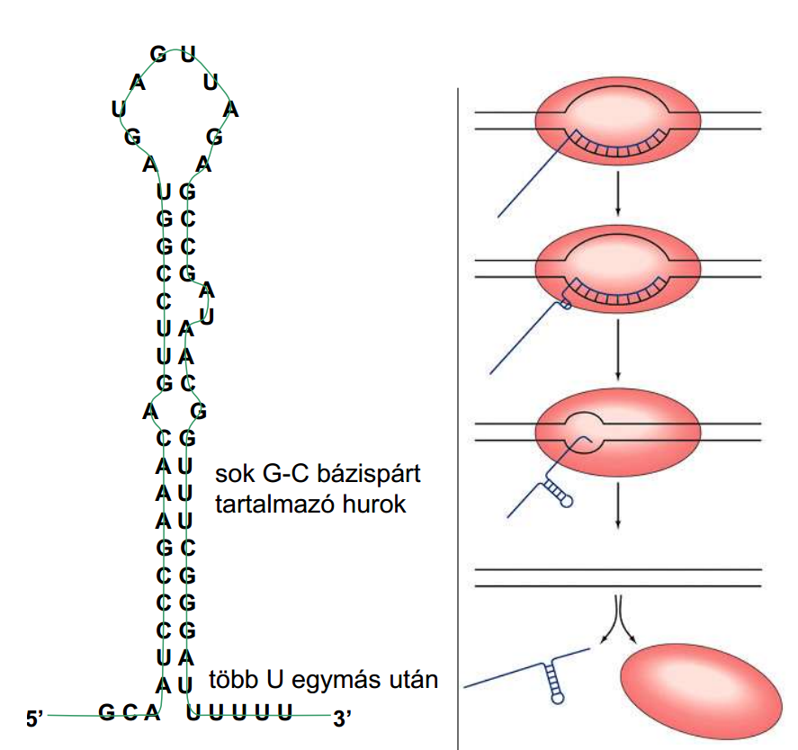
- ρ-faktor 6alegységből áll
- követi az RNS-polimerázt ➜ alapvetően a távolság azonos köztük
- azonban, mikor a hurok szintézis végbement, akkor lelassul a polimeráz, így utoléri a ρ-faktor
- így a ρ-faktor fogja az RNS-szálat és kihúzza a mintaDNS mellől, azaz polimerázból 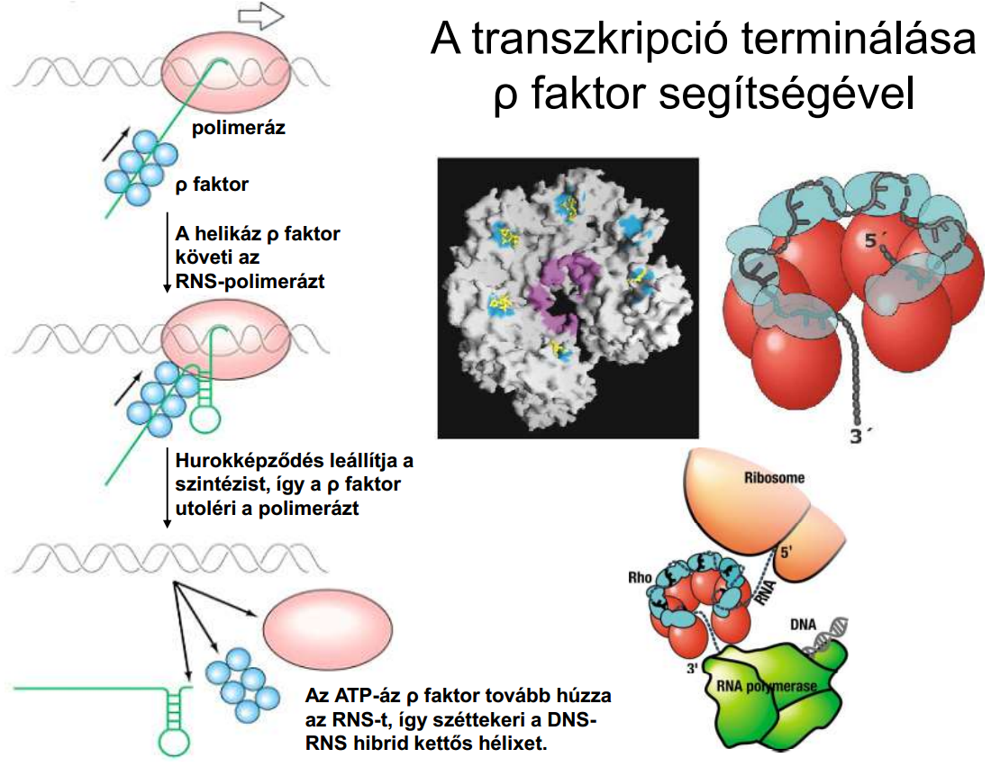
- pl. rifamicin és rifampicin nevű gyógyszerekkel lehet
- ezek a polimeráz β-alegységéhez kötődve meggátolják az iniciációt
- mikrobaktérium (tuberkolózis és lepra) ellen használják
iniciáció lényege?
§ kb.10nukleotid után a konformációnak megint változnia kell
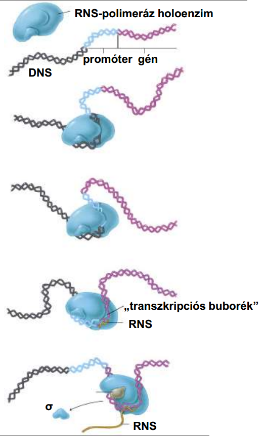
terminálások típusainak felsorolása?
ρ-faktor nélküli termináció lényege?
ρ-faktoros termináció lényege?
gyógyszeres gátlása ➜ gyógyszer neve? lényege? mi ellen?
#13 Az RNS típusai, a különböző RNS-ek funkciója. Az rRNS és a tRNS szintézise.
Az RNS típusai, a különböző RNS-ek funkciója. Az rRNS és a tRNS szintézise
- csoportosításuk
- kódoló ➜ mRNS
- nem kódoló ➜ összes többi
- hnRNS(heterogén nukleáris RNS) = pre-mRNS ➜ mRNS
- genetikai információt (fehérje aminosav-sorrendje) szállít DNS-től a riboszómákhoz
- tRNS ➜ fehérjeszintézis adaptere(átalakítja a 3bázist a megfelelő aminosavra)
- rRNS ➜ riboszóma felépítésében vesznek részt
- riboszóma rRNS-akből és fehérjékből tevődik össze
- ezenkívül két alegységre bontható ➜ kis(40S) és nagy(60S)
- kis alegységet az alábbi rRNS alegységek(+) építik fel ➜ 18S + 5,8S + 5S
- nagy alegységet az alábbi rRNS alegységek(+) építik fel ➜ 40S
- snRNS ➜ splicing (lásd 17.tétel)
- snoRNS ➜ ezek más RNS-eket módosítanak, pl. rRNS-ek érését végzik, pszeudouridint építenek be tRNS
- telomeráz-RNS ➜ telomeráz alkotója, mely telomer "pótlását" végzi
- mikroRNS ➜ RNS-eket 3'-végéhez csatlakoznak, aminek következtében azokat RNázok lebontanak
- scRNS ➜ szekretálódó fehérjéket szintetizáló riboszómákat irányítják az ER-hez
- antiszensz RNS-ek ➜ génexpresszió gátlása
- XIST RNS ➜ nőkben van, inaktívvá teszi az egyik X-kromoszómát
- mitokondriális tRNS(22féle) & rRNS(2féle) 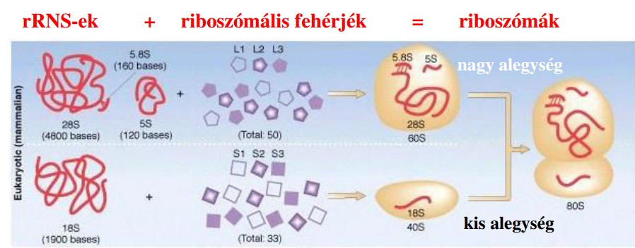
Az RNS típusai, a különböző RNS-ek funkciója. Az rRNS és a tRNS szintézise
-
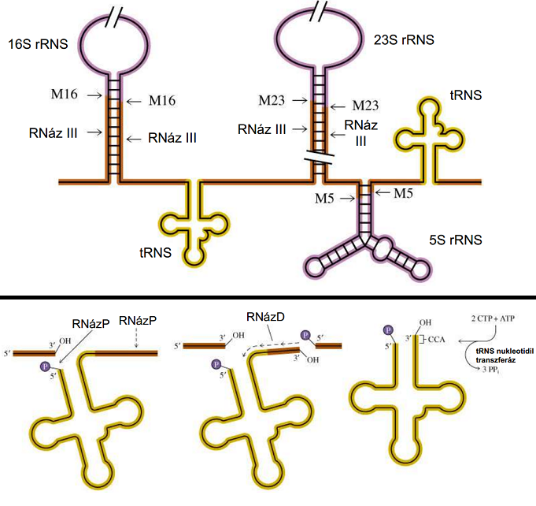
- egy ún. elsődleges_transzkriptum (1lánc) kódol egyaránt rRNS-eket és tRNS-eket is ()
- ezután az RNS-ek kimetszésre kerülnek RNázok által
- pl. tRNS esetében
- RNázP kivágja a tRNS-t
- azonban 3' végén még marad néhány fölös nukleotid
- azokat az RNázD fogja fokozatosan lemetszeni
- végül tRNS-nukleotidil-transzferáz tesz a 3' végére CCA nukleotidokat
- ezután (ez már tutti poszt-transzkripciós módosítás) még számos nukleotid/bázis módosítás történik ➜ pl. metilálódik az uracil 5.C-je és lesz belőle 5metil-uridin, vagy a ribóz 2hidroxilcsoportja metilálódik /// illetve van még pl. pszeudouridin nevű nukleozid is 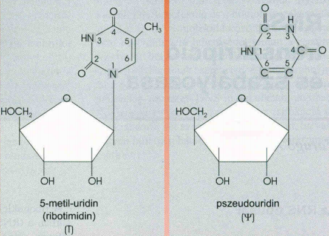
- RNS polimeráz I szintetizálja az rRNS alegységeket
- RNS polimeráz III szintetizálja a tRNS-eket
- itt is szintetizálódik szvsz hasonlóképpen, mint prokariótáknál 22fajta tRNS, és 2fajta rRNS
prokariótáknál pl. E.coli
§ a tRNS az 5' végén foszforilált, 3'végén nem ✽
eukariótáknál
eukarióták miktokondriuma
#14 A transzkripció szabályozása prokariótákban. Erős és gyenge promóterek, konstitutív gének, operon fogalma, pozitív/negatív szabályozás.
A transzkripció szabályozása prokariótákban. Erős és gyenge promóterek, konstitutív gének, operon fogalma, pozitív/negatív szabályozás
- erős promoter, mely hasonlít a σ("szigma!")-faktor szekvenciájához! ➜ ehhez "jobban~könyebben" kötődik a σ-faktor
- ez mindössze az iniciáció esélyét szabályozza ➜ tehát erős promoteres gének expressziója / perc nagyobb, mint gyenge promotereseké
- ➜ tehát az elongáció sebessége (50nukleotid/sec) nemváltozik
- így a σ-faktor kicerélésével megváltoztatható a génexpresszió alapjaiban
- ami eddig gyenge promoter volt, az erőssé válik és fordítva
- hiszen a σ-faktor szekvenciája megváltozott, és ahhoz való "viszonyától" függ az erőssége a promoternek
A transzkripció szabályozása prokariótákban. Erős és gyenge promóterek, konstitutív gének, operon fogalma, pozitív/negatív szabályozás
- expressziójuk nem áll szabályozás alatt
- ugyanis olyan fehérjéket kódolnak, melyre minden sejtnek mindig szüksége van ➜ folyamatosan expresszálódnak
- pl. glikolízis enzimei (vagy pl. eukariótákban: aktin, ubiquitin)
A transzkripció szabályozása prokariótákban. Erős és gyenge promóterek, konstitutív gének, operon fogalma, pozitív/negatív szabályozás
- operon fogalma ➜ prokarióta génexpresszió szabályozási egysége
- negatív ➜ operátor-hoz kötődve a génreguláló_fehérje=represszor gátolja az iniciációt ➜ ha leválik, a transzkripció megindul
- pozitív ➜ operátor-hoz kötődve a génreguláló_fehérje=aktivátor serkenti az iniciációt ➜ ha leválik a transzkripció abbamarad
- génreguláló_fehérjéhez ha ligandum kapcsolódik, leválik az operátorról
- génreguláló_fehérjén alapból ott a ligandum, és ha külön válnak, akkor válik le operátorról
- pl. triptofán esetében a -10 és -35 között van az operátor régió
- a represszor fehérje akkor kötődik oda, ha hozzá ligandum kapcsolódik, és akkor fog gátolni ✽
- a ligandum maga a triptofán, tehát ha sok triptofán van, akkor hozzákötődik a represszorhoz, és a továbbiak szintézise gátolva lesz 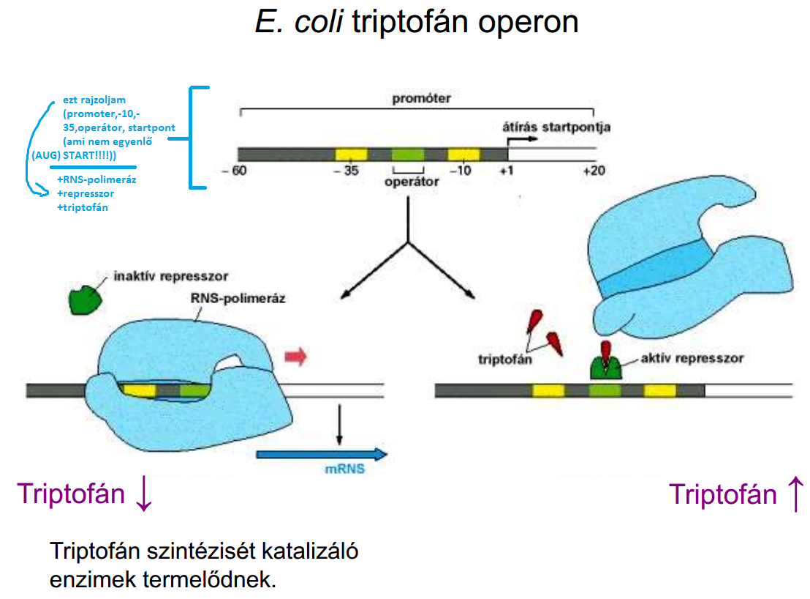
- Lac operon 3 fehérjét kódol ➜ β-galaktozidáz, galaktozid permeáz, galaktozid transzacetiláz
- β-galaktozidáz ► laktózt lebontja glükózra és galaktózra
- galaktozid permeáz ► laktóz transzportjáért felelős
- galaktozid transzacetiláz ► laktózra átvisz egy acetil csoportot az acetil-CoA-ról
- két dolog szabályozza a fehérjék expresszióját
- glükóz ha kevés van ➜ serkenti
- laktóz ha kevés van ➜ gátolja
- génreguláló fehérjék ➜ ligand ➜ kötődésük mit okoz
- aktivátor: CRP=CAP ➜ cAMP ➜ kapcsolódik
- represszor: lac ➜ laktóz ➜ leválik ✽
- a promoter(P) régió
- után van közvetlenül az operátor(O) régió
- előtte van közvetlenül az (ún. CAP binding site) kék-színű
- () a lac nevű represszor-fehérje az operátorhoz kötődve gátolja a transzkripciót egész addig, amíg nem magas a laktóz koncentráció ➜ ugyanis az hozzá kötődve, konformációváltozást vált ki, és leválik az operátorról
- enekívül az alacsony glükóz koncentráció esetében cAMP termelődik ➜ ez hozzákapcsolódva egy ún. CAP=CRP(aktivátor!!!), konformációváltozást vált ki, és képes lesz csatlakozni a promoter régió elé ➜ növeli az RNS-polimeráz affinitását a promoterhez (serkenti az iniciációt, nő a transzkripció száma/perc, persze csak amennyiben nincs gátolva az operátor régiónál)
- amennyiben laktóz és glükóz koncentráció is magas (képen E) eset), akkoris van génexpresszió egy kis mértékben ➜ ugyanis itt alapból gyenge a promoter -35 szekvenciája, és ezért van szükség aktivátorra is
típusainak felsorolása és lényegük? ➜ R 1pl-n bemutatva
-
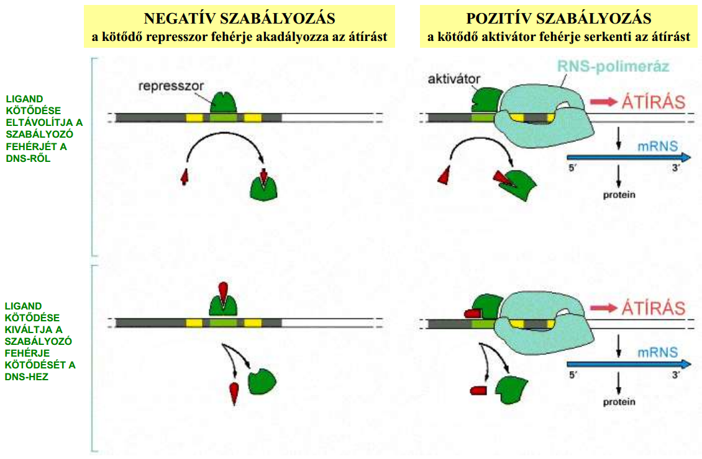
csoportosítás hatásuk alapján
csoportosítás operátorhoz kötődésük alapján
Lac operon expressziójának szabályozásán keresztül bemutatás

➜ tehát az optimális, ha sok laktóz és kevés glükóz (ez logikus, hisz akkor van szükség a laktóz lebontását végző enzimekre)
transzkripció három fő különbsége prokarióta és eukarióta között
| prokarióta | eukarióta |
|---|---|
|
✽ policisztronos_mRNS (több gént tartalmaz) képződik ➜ szabályozása több fehérjére van hatással
✽ hnRNS-érés nincs (sapka,poliA,splicing)
✽ térben és időben együtt zajlik a transzkripció és transzláció ➜ citoplazmában zajlanak, és a transzkripció után(sőt közben már) egyből transzláció
✽ 1 féle RNS-polimeráz van
|
✽ monocisztronos_mRNS (1gént tartalmaz) képződik ➜ szabályozása 1 fehérjére van hatással
✽ hnRNS-érés van (sapka,poliA,splicing)
✽ térben és időben külön zajlik a transzkripció és transzláció ➜ közöttük még van egy transzport kifelé a sejtmagból és közben hnRNS-érés is
✽ 4 féle RNS-polimeráz van ➜ három magi (I-II-III) és egy mitokondriális
|

#15 Az eukarióta gének szerkezete, a transzkripció iniciációja és terminációja eukarióta sejtekben.
Az eukarióta gének szerkezete, a transzkripció iniciációja és terminációja eukarióta sejtekben
- 2 konszenzus szekvencia van ➜ -10 & -35 régió
- ezekről annyit jegyezzek meg (kép csak ábrázolja, nem kell tudnom)
- mindkettő 6 bázisból áll
- -10 ➜ timinben és adeninben gazdag!! (pl. TATAAT stb.)
- TATA-box(-30) ➜ ez a prokarióta -10-ének "megfelelője", tehát ez is A és T-ben gazdag
- INR(+1)
- DPE(+30)
- BRE(-35)
- ... mert ehhez csak az áTF-ok + RNS-polimeráz II kapcsolódik (tehát ez az "alapvető, minimális" promoter)
- a teljes promoterbe már mást is beleveszünk (gondolom silencer + enchancer + insulator & spcTF-ek)
- konszenzus_szekvencia ➜ bázisok egymásutáni sorrendje, mely nem mindig egyforma ➜ ezért a legnagyobb gyakorisággal elődordulót jelöljük mindig
eukarióta RNS-polimeráz II "CORE" promoterének összehasonlítása prokarióta promóterével!
R prokarióta
R eukarióta
2 leggyakoribb konszenzus szekvencia van
pl. másik 2 konszenzus szekvenciára
➜ TFIID-t köt az összes, kivéve a BRE, az TFIIB-t
azért CORE promoter a neve...

Az eukarióta gének szerkezete, a transzkripció iniciációja és terminációja eukarióta sejtekben
-
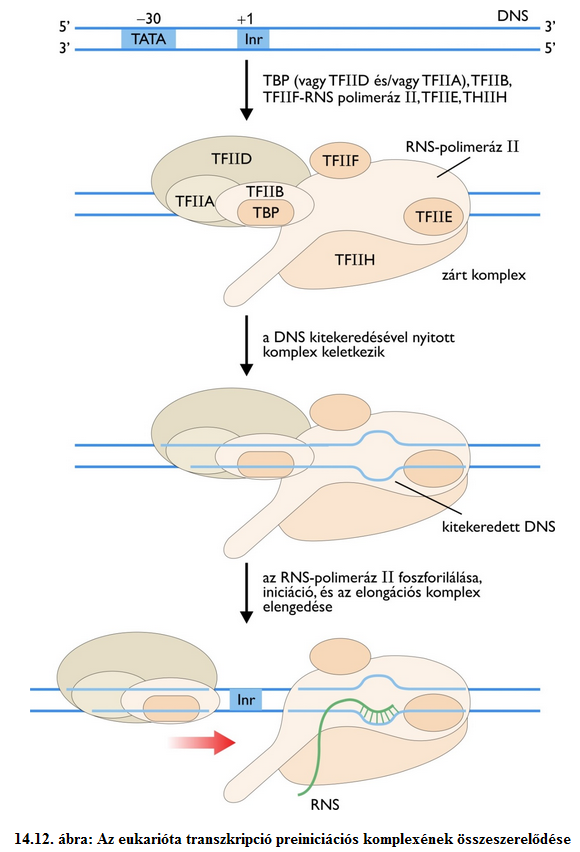
- σ-faktor szerepét az eukarióta RNS polimeráz II-ben az általános_transzkripciós_faktorok vették át
- 6 féle van ➜ elnevezésük: TFIIA-tól egészen TFIIH-ig ➜ G és C nincsen!
- TFIID
- tartalmaz egy ún. TBP(TATA Binding Protein)-t (és)
- ez ismeri fel a TATA-boxot, és kötődik hozzá, majd ehhez az összes többi általános_transzkripciós_faktor
- TFIIH
- ez kapcsolódik a legvégén hozzá
- helikáz és ()kináz aktivitással is rendelkezik
- helikáz ➜ 1fordulatnyi DNS-t szétteker az INR környékén (ATP bontása révén)
- ()kináz ➜ RNS-polimeráz II C-terminális doménjét (CTD) polifoszforilálja, amely szintén az elongáció megkezdésének feltétele

- tehát az iniciáció lépései röviden összefoglalva
- TBP(TFIID) kötődik a TATA-boxhoz
- ezután kötődik hozzá a többi általános transzkripciós faktor is, utoljára TFIIH ➜ közben RNS-polimeráz II is (TFIIF-el érkezik)
- a TFIIH szétteker 1 fordulatnyi DNS-t + polifoszforilálja az RNS polimeráz II CTD-jét
Az eukarióta gének szerkezete, a transzkripció iniciációja és terminációja eukarióta sejtekben
-
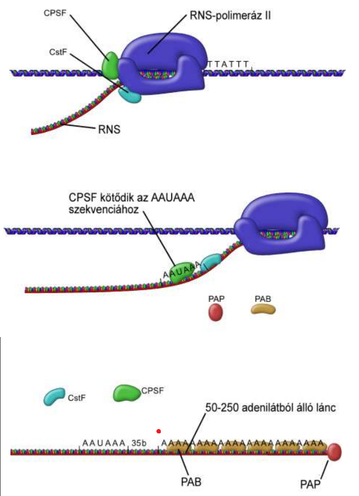
- két fehérje kapcsolódik az RNS polimerázhoz ➜ CPSF & CsTF
- CPSF ➜ felismeri a poliadeniláció helyét
- CsTF ➜ ez egy endonukleáz enzim
- lényege
- két fehérje szépen ül az RNS-polimeráz hátán egészen addig, amíg meg nem látja a CPSF a következő szekvenciát: AAUAAA
- ekkor a CPSF ráveti magát a szekvenciára, és magával rántja az enzimet is (CsTF)
- amikor leválnak az RNS-polimeráz II-ről, akkor az befejezi a transzkripciót ➜ termináció
- az AAUAAA szekvencia után 3' irányba kb. 35bp-nyival levágja a CsTF a "felesleget" ✽
- ezután a PAP = poliadenilát-polimeráz a 3' végre elkezd ATP-t felhasználva Adeninokat beépíteni kb. 200db-ot
- poliA-farok funkciója ➜ exonukleázok ellen ugyan nem rezisztens, mint az 5'sapka, azonban amíg ezeket hasítgatják le (csipegetik), addig nincs gond ➜ minél hosszabb annál tovább életképes az mRNS (hisz ha elérik a kódoló szakaszt az exonukleázok akkor vége)
poliA-farokképzés & termináció
AAUAAA ➜ poliadenilációs és egyben terminációs szekvencia
RNS-polimeráz II felépítése
- sokkal több(tizenvalahány) mint 4 alegységből épül fel (ellentétben a prokariótáéval)
RNS-polimerázok funkciója
- I ➜ rRNS alegységek szintézise ✽
- II ➜ hnRNS és snRNS szintézise
- III ➜ tRNS szintézise ✽
#16 A transzkripció szabályozása eukariótákban. Specifikus transzkripciós faktorok, szabályozó szekvenciák, koaktivátorok, korepresszorok.
#17 Az eukarióta mRNS érése.
Az eukarióta mRNS érése
- a génben vannak ➜ exonok(fehérjét kódoló szakasz) és intronok(fehérjét NEM kódoló szakasz)
- 3'UTR funkciója (➜ mikroRNS-ek kötődnek oda)
- 5'UTR funkciója ➜ gátolják a transzláció sebességét
- /a képen az 5'UTR és 3'UTR is exonba van sorolva, ez lehet nem gond, de akkor fontos megjegyezni, hogy ezek nem kódolnak fehérjét/
- lépések, sorrendben
- 5'sapka
- splicing
- 3'poliA-farokképzés
- időben ➜ transzkripció közben zajlik az mRNS érés ➜ tehát az 5'sapka rátevődik az elején már, közben folyamatosan megy az intron splicing, és termináció során lesz a 3' végen poliA-farokképződés
- 1 exon a képződő fehérjének 1 domainjét kódolja ✽
- az első nukleotid általában Adenin
- az első nukleotidhoz(Adenin) hozzákapcsolódik egy 7 metil-guanozin
- "eltérések a szokványostól"
- guanin 7.-én van egy metil-csoport
- 3 foszfáttal kapcsolódik az mRNS 5' végéhez a 7 metil-guanozin
- a 7 metil-guanozinhoz a foszfát az 5'nél kapcsolódik (nem 3'nél)
- első kb.2 nukleotidnál a 2' hidroxilcsoportja metilálva van
- folyamat lényege 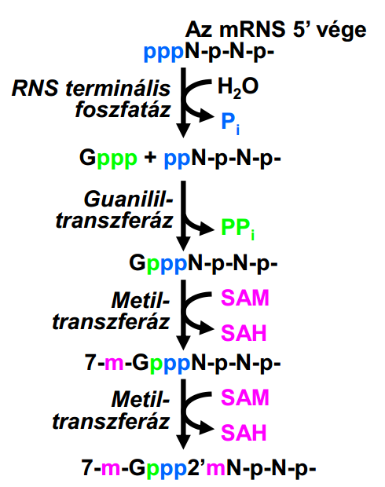
- az első nukleotid általában Adenin, melyhez 3foszfátcsoport kapcsolódik ➜ tehát egy ATP az mRNS 5' végén (valójában eleje) lévő nukleotid
- ez lead 1 foszfátcsoportot (RNS-terminális foszfatáz végzi)
- majd hozzákapcsolódik 1 GTP úgy, hogy a GTP-lead 2foszfátcsoportot (Guanilil transzferáz által)
- ezután egy metil-transzferáz, ún. SAM(S-Adenosyl methionine) fog metilcsoportokat rátenni ➜ Guaninra, illetve Adeninra, ezenkívül még 1-2 nukleotidra
- funkciói
- citoplazma tele van exonukleázokkal
- az exonukleázok a polimerek végeit hasogatják le folyamatosan
- fontos, hogy pontosan történjen a kivágás ➜ ugyanis ha 1 aminosavval arréb lesz, akkor az összes aminosav más lesz onnantól, mint ami kéne ✽ ➜ inkább 3 aminosavval legyen elvétve, mint 1el (hisz akkor 1aminosav marad csak ki, de a többi jó lesz)
- 3 konszenzus szekvencia van ➜ két hasítási (3' és 5') és egy elágazási
- ezen szekvenciák felismerését tehát nagyon pontosan kell elvégezni ➜ ezt a funkciót (felismerést) nem is fehérjék, hanem RNS-ek végzik ➜ bázispárosodással ismerik fel
- ugyanis az snRNP(RiboNukleoProtein) áll egyrészt RNS-ből illetve fehérjéből, és az RNS része végzi a fő feladatot, a szekvencia felismerését
- 5féle snRNP vesz részt benne ➜ U1-U6 snRNP, de U3-as nincs
- folyamat lényege (lásd kép!)
- RNS-polimeráz II szintetizál és a képződő hnRNS-en van egy exon(világos) és utána intron(sötét)
- intronon megjelenő 5' hasítási szekvencia miután megjelenik, ráveti magát az U1-snRNP
- később az intronon megjelenő elágazási szekvencia miután megjelenik, ráveti magát az U2-snRNP ➜ ott a bázispárosodásnál kilóg egy Adenin 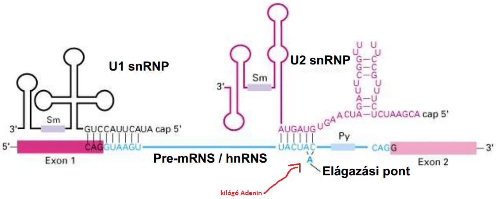
- majd az intronon megjelenő 3' hasítási szekvencia is megjelenik, és ráveti magát az U5-snRNP
- ezután az U4 és U6 is hozzájuk kapcsolódik és létrehoznak egy komplexet ➜ ún. splicesoma-t
- következő lépések a "splicesoma belsejében" történnek 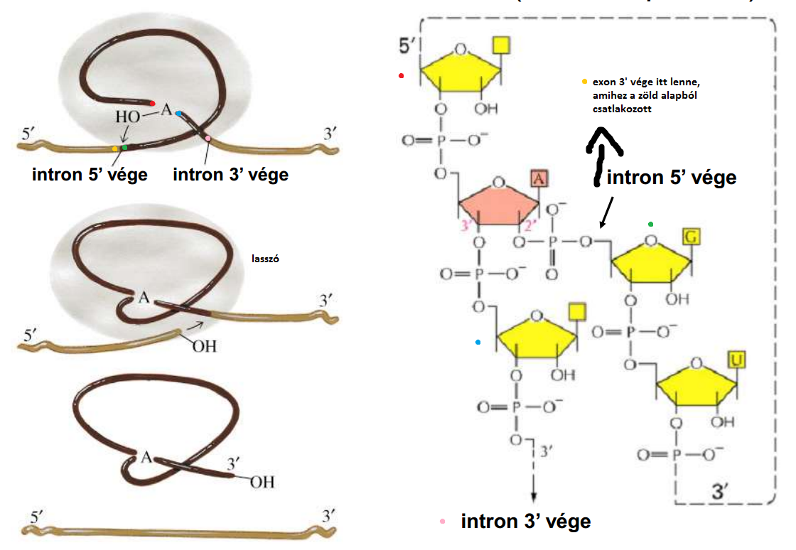
- kilógó Adenozinnek a 2' -OH csoportját felhasználja a splicesoma
- ezzel felbontja az intron 5' vége és exon 3' vége közti foszfodiészter kötést (alkoholizál!), és az intron 5' végét átkapcsolja az Adenozinhoz (kép!!!)
- ezután ismét alkoholizál ➜ exon 3' -OH csoportjára kicseréljük az intron 3' -OH csoportját ➜ így kötődik a másik exon 5' végéhez
- az így képződött "intron-struktúra" neve a lasszó
- két fehérje kapcsolódik az RNS polimerázhoz ➜ CPSF & CsTF
- CPSF ➜ felismeri a poliadeniláció helyét
- CsTF ➜ ez egy endonukleáz enzim
- lényege
- két fehérje szépen ül az RNS-polimeráz hátán egészen addig, amíg meg nem látja a CPSF a következő szekvenciát: AAUAAA
- ekkor a CPSF ráveti magát a szekvenciára, és magával rántja az enzimet is (CsTF)
- amikor leválnak az RNS-polimeráz II-ről, akkor az befejezi a transzkripciót ➜ termináció
- az AAUAAA szekvencia után 3' irányba kb. 35bp-nyival levágja a CsTF a "felesleget" ✽
- ezután a PAP = poliadenilát-polimeráz a 3' végre elkezd ATP-t felhasználva Adeninokat beépíteni kb. 200db-ot
- poliA-farok funkciója ➜ exonukleázok ellen ugyan nem rezisztens, mint az 5'sapka, azonban amíg ezeket hasítgatják le (csipegetik), addig nincs gond ➜ minél hosszabb annál tovább életképes az mRNS (hisz ha elérik a kódoló szakaszt az exonukleázok akkor vége)
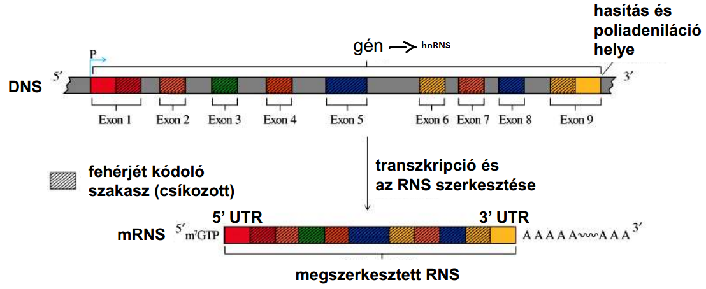
 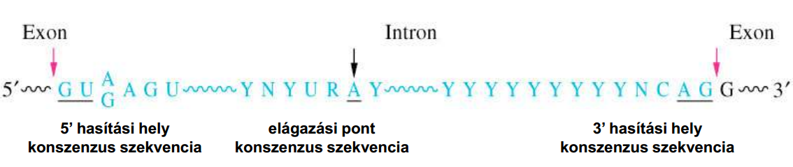
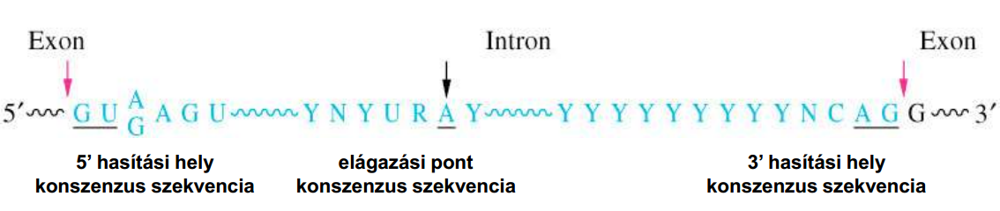
 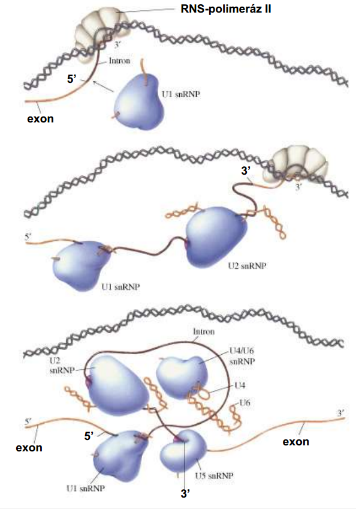
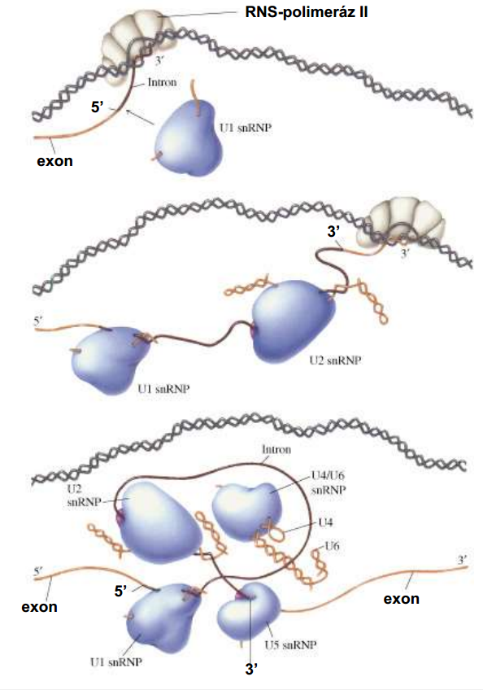
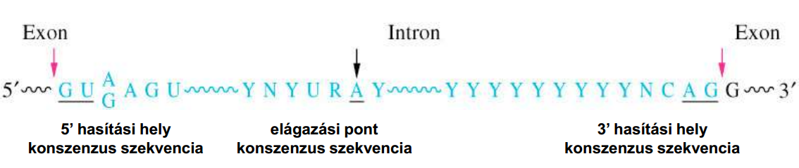
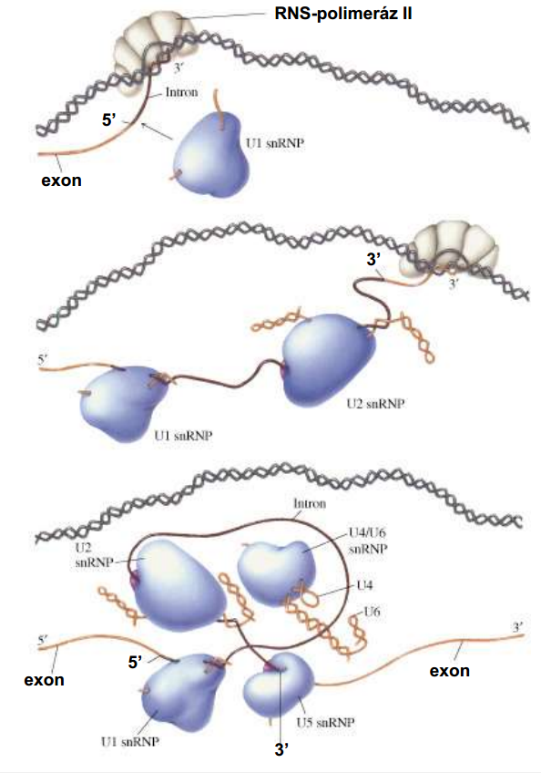
UTR = UnTranslated Region ➜ ez a transzlációnál nem írodik bele a fehérjébe
R 5'sapka
✽ azonban a sapkát nem ismeri fel sem az 5' sem a 3' exonukleáz, így nem kezdik el levagdosni
✽ másrészt a magban úgy nevezett sapkakötő-fehérjék kapcsolódnak hozzá
✽ illetve a transzlációnál is, az iniciációs faktorok majd ehhez fognak kötődni
splicing
poliA-farokképzés & termináció
AAUAAA ➜ poliadenilációs és egyben terminációs szekvencia
egyenlőre nem kategorizált, tudnivalók
fogalmak ➜ kodon, kód, antikodon
-
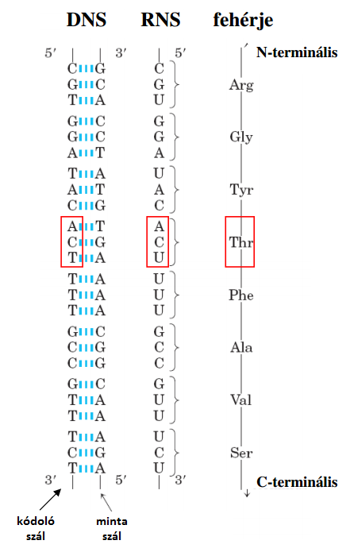
- kód ➜ bázishármas a DNS-ben (=> kódoló szálon lévő!)
- kodon ➜ kóddal megegyező bázishármas az mRNS-ben
- antikodon ➜ kodon komplementer bázishármasa tRNS-ben
DNS + mRNS + fehérje kolineáris ➜ 5'-3' irányba növekszik az mRNS-is + a fehérje pedig N-C irányba
START & STOP kodon?
- START ➜ AUG (augusztusban indul a transzláció)
- STOP ➜ UGA, UAA, UAG
az UGA kódolja egyben a szelenociszteint is ➜ UGA tehát vagy STOP-ként funkcionál vagy szelenociszteint épít be (ez attól függ, hogy milyen bázisok vannak körülötte)
kód 3 jellemzője?
- univerzális ➜ bázistriplet prokatiótákban és eukariótákban ugyanazt az aminosavat kódolja (kivétel ezalól a mitokondriális DNS)
- folyamatos ➜ nincs közöttük vessző
- degenerált ➜ 1 aminosavat több bázistriplet is meghatározhat (pl. Thr lehet ACU,ACC,ACG,ACA) 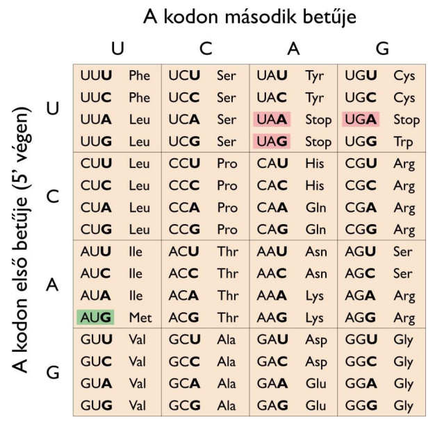


 része az apoláros oldaláncokkal alkot kötést ➜ így kb. a fehérjék negatív töltése arányos lesz a tömegükkel () ➜ fajlagos töltésük megegyezik ➜ töltéstől !!! már nem fog függni, !!!tömegtől se kéne de attól mégis!!!(lásd lentebb)
része az apoláros oldaláncokkal alkot kötést ➜ így kb. a fehérjék negatív töltése arányos lesz a tömegükkel () ➜ fajlagos töltésük megegyezik ➜ töltéstől !!! már nem fog függni, !!!tömegtől se kéne de attól mégis!!!(lásd lentebb)


 . A papírt hozzáragasztom felül a tank fedőjéhez, így megáll majd ✽. Így hagyom kb 30-45percig. Ezután kiveszem a papírt, és először megjelölöm egy vonallal, hogy meddig "nedvesedett át". Ez az ún. frontvonal: eddig jutott el az apoláros oldószer, és egyben ez jutott legfelülre (tehát egyik aminosav se hagyja le, még a legapolárosabb se). Ezután hajszárítóval megszárítom, majd utána lefújom spray-vel (magyarázatát lásd lennt), majd újra megszárítom hajszárítóval. Végeredményben színes foltokat fogok látni. TLC-nél ugyanezt kell csinálni. /TLC ugyanúgy néz ki, mint a papír, csak vékonyabb, és a szélessége is kisebb (tehát az aminosavcseppeket kevesebb mint 1cm-el kell egymás mellé tenni)/
. A papírt hozzáragasztom felül a tank fedőjéhez, így megáll majd ✽. Így hagyom kb 30-45percig. Ezután kiveszem a papírt, és először megjelölöm egy vonallal, hogy meddig "nedvesedett át". Ez az ún. frontvonal: eddig jutott el az apoláros oldószer, és egyben ez jutott legfelülre (tehát egyik aminosav se hagyja le, még a legapolárosabb se). Ezután hajszárítóval megszárítom, majd utána lefújom spray-vel (magyarázatát lásd lennt), majd újra megszárítom hajszárítóval. Végeredményben színes foltokat fogok látni. TLC-nél ugyanezt kell csinálni. /TLC ugyanúgy néz ki, mint a papír, csak vékonyabb, és a szélessége is kisebb (tehát az aminosavcseppeket kevesebb mint 1cm-el kell egymás mellé tenni)/